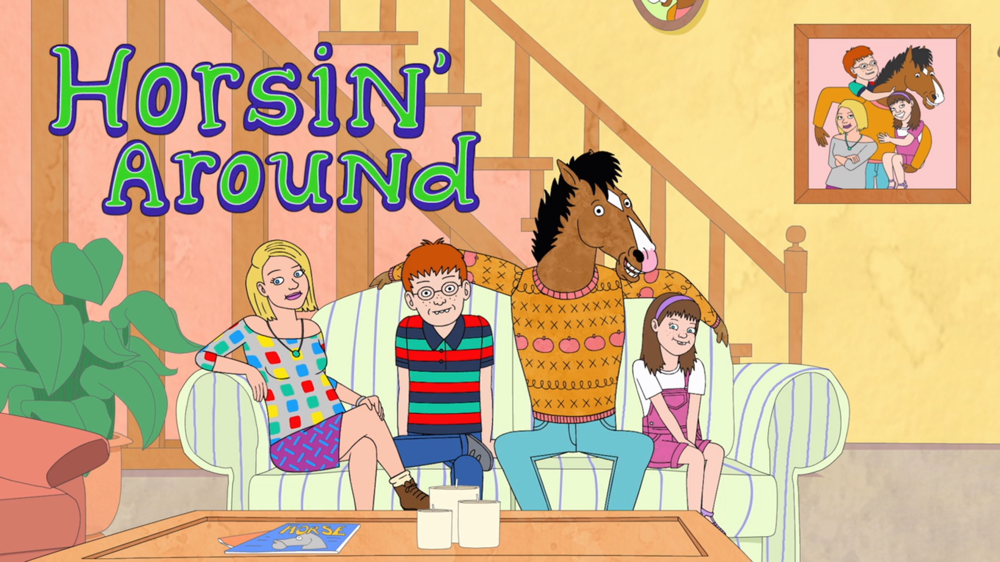

About BoJack
BoJack is 1,200lb horse who lives in Hollywood. BoJack found renown for appearing in the popular 1980's sitcom "Horsin' Around".
Horsin' Around
Psycological Profile
Since his abrupt fall to irelivance, BoJack has developed a number of vices and problematic issues.
- Depression
- Narcasistic Tendancies
- Alcohol, Sex, and Substance Addiction
- Commitment and Relationship Problems
Footage obtained by TMZ
Notable Works
Here is a list of popular featuring BoJack.